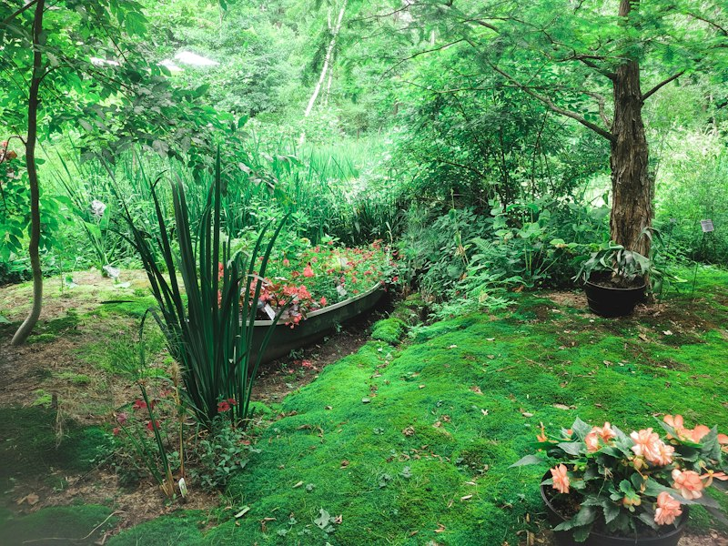
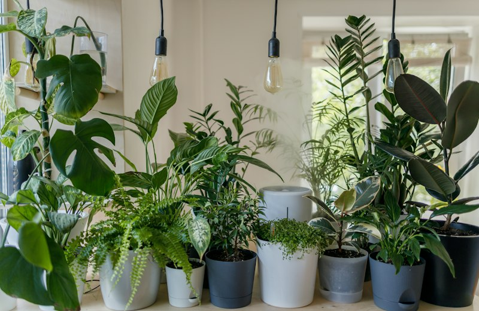
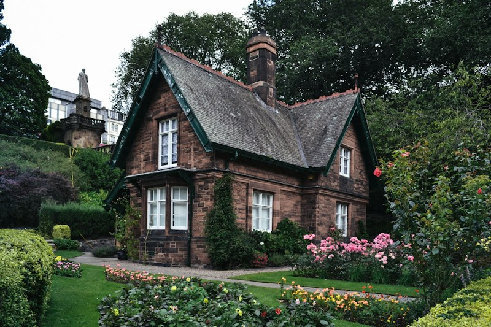

Hunian Modern
Hunian Modern
Taman Minimalis Tropis Villa Pondok Indah
Perpaduan tanaman sikas, kamboja fosil, rumput jepang, serta stepping stone andesit bertekstur alami dengan lighting tersembunyi.
Jelajahi berbagai proyek nyata yang telah kami wujudkan dengan standar estetika tinggi, ketepatan waktu, dan kepuasan klien.
Hunian Modern
Perpaduan tanaman sikas, kamboja fosil, rumput jepang, serta stepping stone andesit bertekstur alami dengan lighting tersembunyi.
 Zen Garden
Zen Garden
Konsep taman kering semi-indoor bebas lumpur dengan pola taburan batu kerikil putih, lentera batu kasuga, dan bonsai beringin korea elegan.

Vertical GardenDinding hidup penyaring polusi dengan 12 jenis tanaman sirih gading, monstera, philodendron, dilengkapi otomatisasi irigasi fertigasi.
 Kolam Koi
Kolam Koi
Kolam ikan koi kaca dengan filtrasi 4 chamber biologis, waterfall modern batu alam, dan border tanaman peneduh.

KomersialPenataan ruang terbuka hijau komersial bertingkat dengan rumput swiss, pohon pinus hias, dan seating spot batu alam.

Hunian ModernTransformasi halaman belakang menjadi ruang kumpul keluarga lengkap dengan gazebo ulin dan hamparan rumput rapi.
Deskripsi proyek.